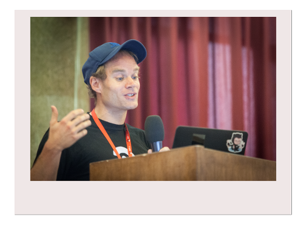

Documentation For Developer
Plone Conference - Boston 2016
Sven Strack / @der_sven_
Outline
- Short overview, why docs are important
- Talk about philosophy, strategy, tone
- Dive into writing and workflow
- Different ways of testing
That's Me

- Working with Plone since 2006
- Mostly deployment and hosting
- Member of the Docs Team
- Member of the 'Write the Docs' Community
- Founding member of 'Test the Docs'
- I like to complain
I suck at writing documentation !